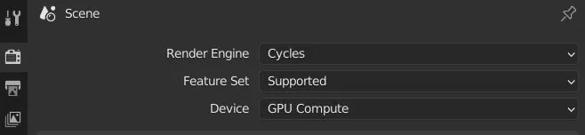
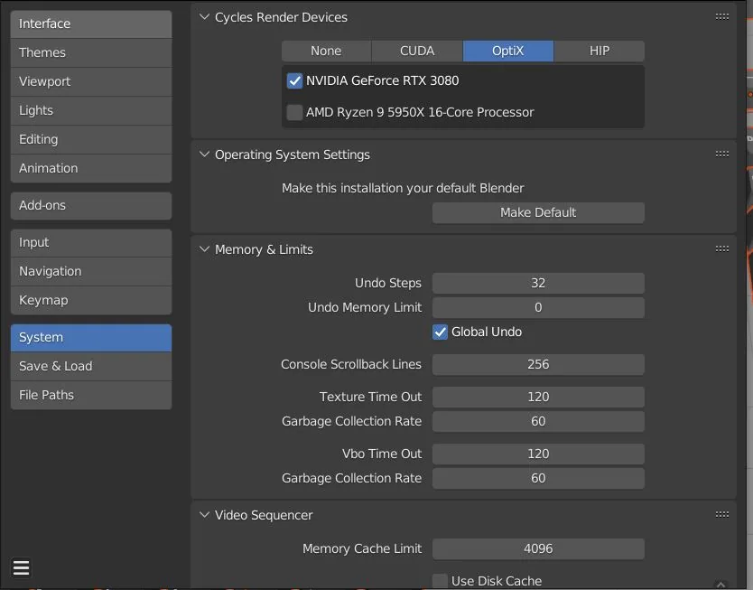
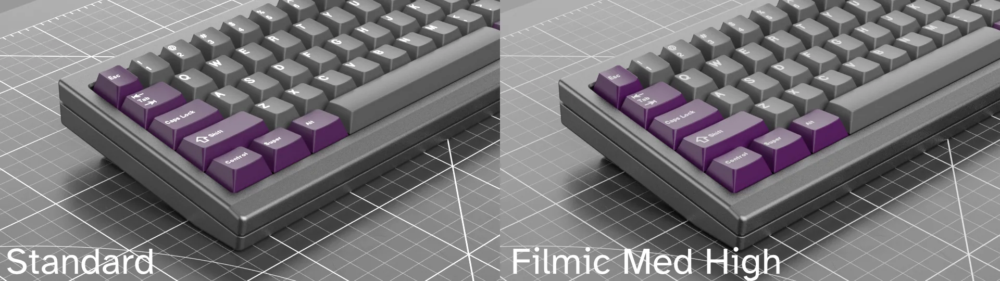
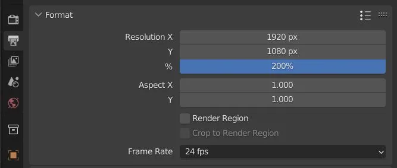
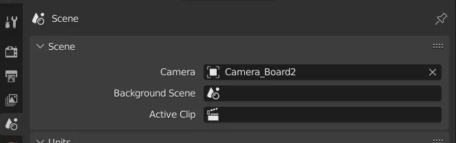
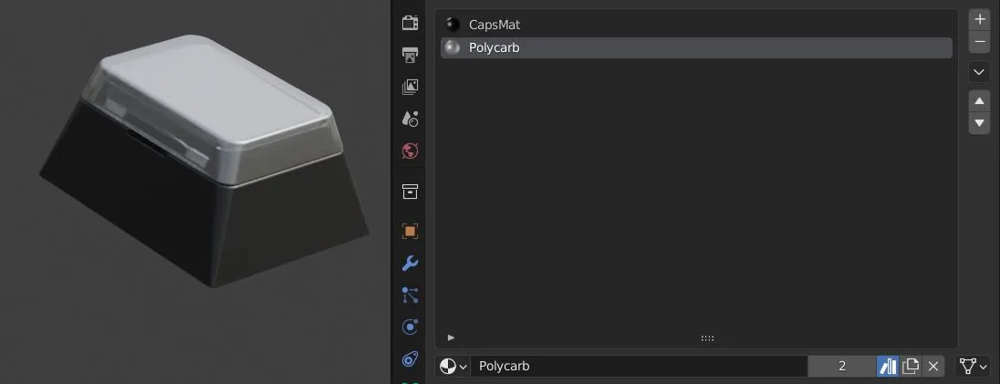
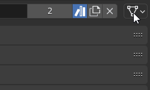

Редактор свойств#
Панель свойств в Blender содержит очень много разделов, здесь рассмотрим лишь несколько наиболее важных.
Свойства рендера#
Устройство рендера#

Рендер можно ускорить с помощью GPU (видеокарты). Учтите: чтобы это заработало, нужно также настроить вычислительное устройство в настройках.

Сэмплы#
По умолчанию во вьюпорте 32 сэмпла, для финального рендера — 256. Если вы собираетесь рендерить поликарбонат (PC), настоятельно рекомендую ставить не менее 512.
Шумоподавление#
Шумоподавление настраивается здесь. Обычно я включаю шумоподавление вьюпорта и ставлю режим «Авто», а начальное число сэмплов — 2 или больше, чтобы вьюпорт оставался отзывчивым. Шумоподавление финального рендера тоже можно выполнить в композиторе.
Прозрачный фон#

Чтобы отрендерить изображение с прозрачным фоном, нужно включить Film (Плёнка) > Transparent (Прозрачность).
Управление цветом#

Этот раздел важен. В Blender 4.0 стандартное преобразование вида для новых файлов изменилось с Filmic на AgX. В показанной здесь конфигурации используется Filmic без применения look. Некоторые пользователи предпочитают Standard, так как с ним, по их ощущениям, проще согласовывать цвета. Лично я предпочитаю Filmic. Переходы в светах мягче, а в сочетании с Medium High Contrast картинка очень близка к Standard, но с лучшей проработкой светотени. Если планируете экспортировать EXR, эти настройки не имеют значения — EXR экспортирует полные данные буфера.
Свойства вывода#
Разрешение#
Здесь задаётся разрешение выходного изображения. При таких операциях, как UV-проекция, разрешение также влияет на результат.
Совет: если сейчас стоит 2K, а вы хотите 4K, можно просто ввести в поле 200%, а не 100%.

Свойства сцены#
Активная камера#

Здесь задаётся, какую камеру Blender использует при рендере.
Свойства данных объекта#
Данные объекта#

Не пропускайте выпадающее меню Object Data (Данные объекта): выберите пункт — и любой объект можно заменить на другой тип объекта.
UV-развёртки#

Если нужен доступ к UV-развёртке какого-либо объекта, ищите её здесь.
Свойства материала#
Индекс материала#

На один объект можно назначить несколько материалов. Например, у кейкапа с окном и кейкапа со сменной легендой есть два слота материалов: материал кейкапа и поликарбонат (PC).
Привязка материала#

Вы можете для каждого объекта указать Blender: использовать материалы из данных объекта или материалы самого объекта.